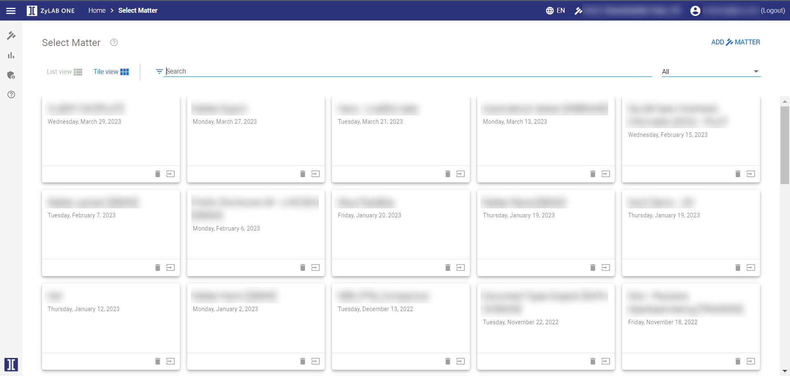
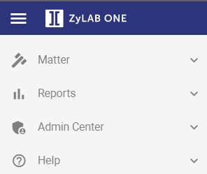

In the top-left corner, click to open the ZyLAB ONE navigation tree. Here, you can find the Help option.



 to open the ZyLAB ONE navigation tree. Here, you can find the Help option.
to open the ZyLAB ONE navigation tree. Here, you can find the Help option.